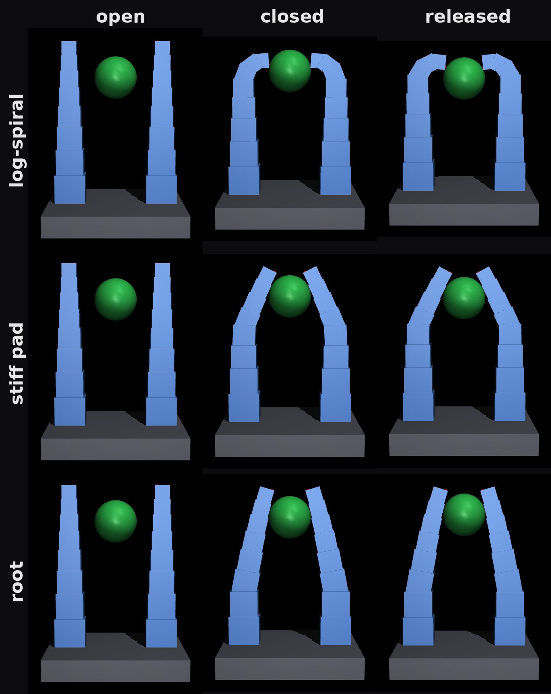
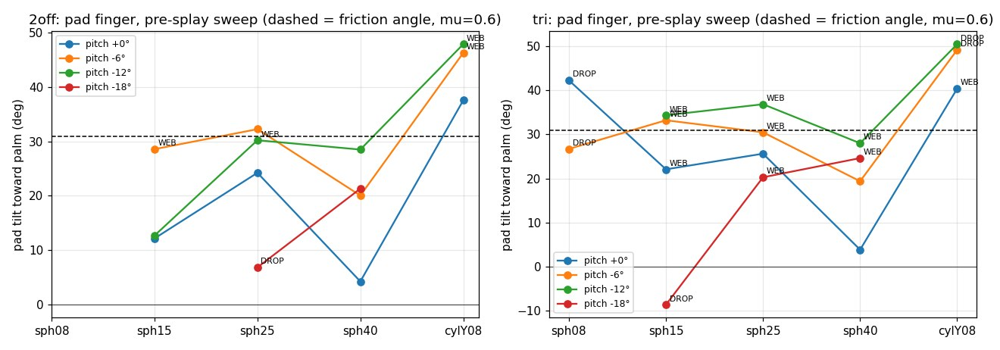
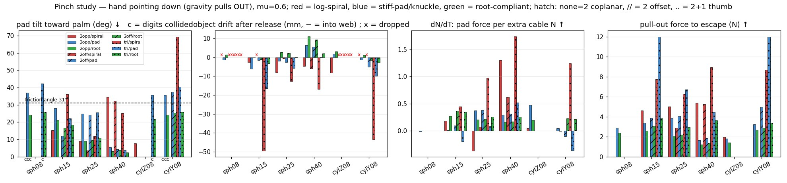
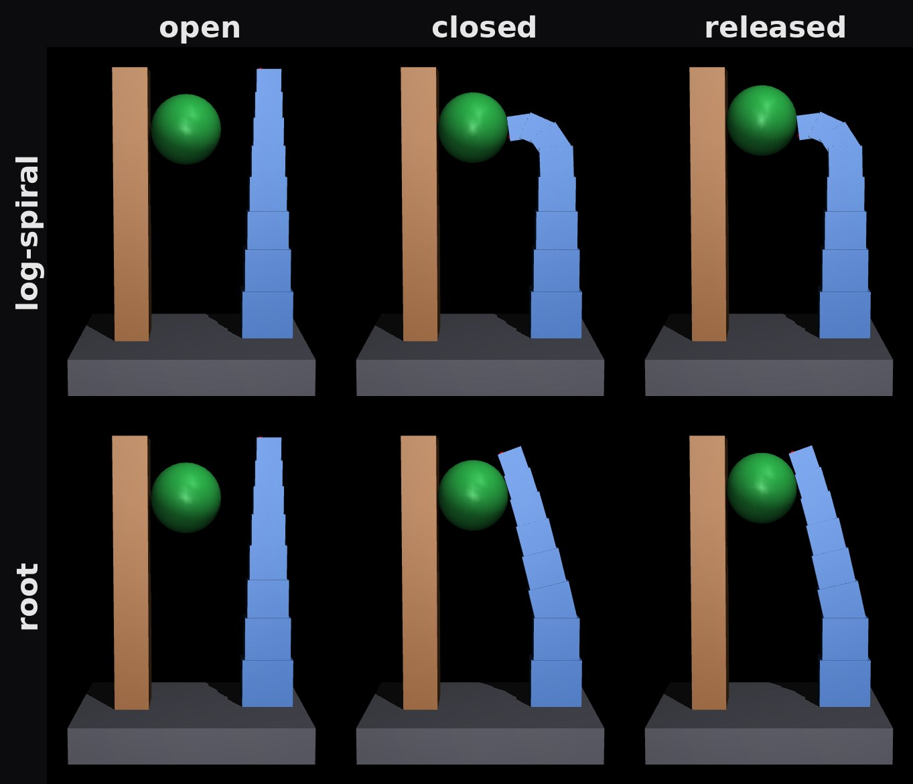
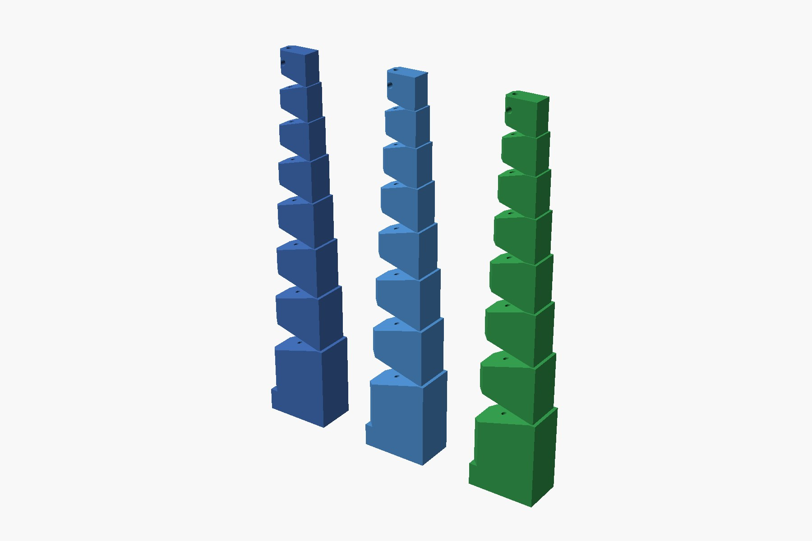

We have a paper that needs a gripper, and the gripper we had would have made the paper unmeasurable. The paper argues that on a soft, tendon-driven hand the body itself is the tactile sensor: servo current, tendon tension and finger flex already carry an incipient-slip signal, so a slip-reactive minimum-force controller needs no fingertip skin. To test that you need a grasp that is friction-limited, where grip force is set by cable tension and the object can slip. Our first hand didn't grasp that way. In simulation it dragged every object into the web of the hand and seated it against the palm. That's a cage, not a pinch: grip force stops mattering, and there is no slip to measure.
Two questions were open before we could print anything. Two fingers or three? Two opposed digits seemed likely to collide on small objects, while three should clear a pen. And what actually pushes the object into the web, and how do you stop it? Both were answered in one session with a simulation bench built from the same parameters that generate the printed parts. No part was printed to find any of this.
The bench
Every digit in the simulation is built from the CAD's numbers. Each printed finger is a discretized logarithmic spiral in TPU: eight tapering units, a V-notch at every joint, a thin elastic web on the back as the spring, one cable to curl it. In MuJoCo that becomes a chain of rigid units with a hinge at each web, a torsional spring at each hinge, and a tendon through the cable channel. The joint ranges, masses, hinge positions and now the spring stiffness all come from the part definition, so changing a web thickness changes both the STL and the physics.
The bench points the hand down, so gravity pulls the object out of the grasp and anything moving toward the palm is the fingers' doing. It presents an object at the pads, closes each cable until that finger feels a small contact force and then holds tension (the way a real tendon hand stops on a current rise), releases the object, and reports four things: whether the object stayed at the pads, migrated into the web, or dropped; how far the pad's contact normal tilts toward the palm; how much extra pad force one extra newton of cable tension buys; and how hard you have to pull to get the object out.
01 / The mechanism, measured
An object slides into the web exactly when the pads push it palm-ward harder than friction holds. That is a friction-cone statement: the contact normal's tilt toward the palm has to exceed the friction angle, 31° for the μ=0.6 we assumed for TPU on plastic. So the question became: what tilts the pad?

The log-spiral finger curls tip-first, and that is the problem. The web's bending stiffness goes as thickness cubed, and the web thins toward the tip faster than the cable's lever arm shrinks, so the tip bends first. Once the tip touches an object, more cable tension bends the tip around it. In the top row you can see the tips hooking over the ball. The pad normal swings toward the palm, the object is pushed in, the tip curls further, and the loop runs away. On a 25 mm ball the bench measured that adding cable tension reduced the normal force on the object and moved it 8 mm per newton toward the palm.
The second cause is plain geometry. A pad carried on a bending finger arrives tilted by roughly the closing travel divided by the lever from the effective hinge to the pad. A finger that bends in the middle has a short lever and a big tilt.
Both fixes are stiffness placement, and both are a one-line change to the part definition: a per-joint web thickness profile. Stiff pad thickens the three distal webs so the last 27 mm is a near-rigid flat pad on a compliant knuckle. Root goes further: only the two proximal webs stay thin, and the rest of the finger is a rigid lever. The lever is now the whole finger, so the tilt at contact is small.
| Finger, 2 opposed, base gap 54 mm | Ø8 ball | Ø15 | Ø25 | Ø40 | Ø8 pen end-on | Ø8 pen across |
|---|---|---|---|---|---|---|
| log-spiral (as printed) | drop (tips collide) | pad | web, 8 mm in | pad, hooked at 34° | web | drop |
| stiff distal pad | pad | web, 6 mm in | pad, 25° | pad, 5° | pad, 0° | pad |
| root compliance only | pad | pad, 21° | pad, 9° | pad, 3° | pad, 0° | pad |
The root finger never went into the web, kept the pad tilt under 10° on the 25 and 40 mm balls, moved the object less than a millimetre per extra newton, and gained about 0.2 N of pad force per newton of cable. Its pull-out force is lower, 1.2 to 2.6 N against 3 to 5 N for the hooking finger, because nothing hooks any more. That is the point. The grasp is friction-limited, which means grip force has to be commanded, which is exactly what the paper's controller is for.
02 / The obvious fix makes it worse
The intuitive cure for a pad that arrives tilted inward is to splay the fingers outward at rest. We swept that. Tilt went up with splay, and by 18° of splay most objects dropped.

The reason is where the bending happens. Splaying at the base means the finger has further to travel, and the extra travel is bent at the knuckle, which sits higher than the base. The knuckle rotation needed to make up the splay is larger than the splay itself, so the net tilt grows. A sweep that takes ninety seconds saved a print run, and it moved the design rule from "splay the fingers" to "put the compliance as low as possible."
03 / Two fingers or three
The interference worry is right for soft tips and wrong for stiff ones. Two log-spiral tips do collide on an 8 mm ball, and the collision ejects it. With a stiff pad the tip-to-tip contact becomes a benign stop, and the two coplanar fingers hold the 8 mm ball and the 8 mm pen in both orientations.

Two other layouts lost on the same bench:
- Offsetting the pair so they pass each other looks like a way around the collision. At 8 mm offset the fingers straddle anything under 15 mm and never touch it.
- Three identical fingers, a pair opposed to one, won only on the 40 mm ball: 2° tilt and 3.6 N to pull out, against 1.2 N for the pair. But the pair missed the 8 mm objects unless it toed in, and toeing in makes the pair collide with the centre finger. Our earlier CAD did exactly that: with 10° of toe-in the fingertips cross the thumb's plane, and at the drawn grasp height the open gap was about a millimetre, which is why the old simulation's object spawned already embedded in a finger. Three fingers earn their keep once the pair can be spread on command, and that is a later version.
04 / A fixed thumb
An excavator thumb is a tempting simplification: one rigid post, one articulated finger that closes onto it, one actuator, and a fixed reference the slip estimator can read against. The bench took ten minutes to extend.

It works with the root finger, which held everything from 8 to 25 mm against the post (the 40 mm ball no longer fits the gap). But the pad tilt roughly doubled compared with two fingers, 18° instead of 9° on the 25 mm ball, because one finger now travels the whole gap. Two ways to buy that back: pin the thumb at several angles the way excavator thumbs are, so the gap is set per object class, or replace the soft finger with a phalanxed linkage finger whose distal segment stays parallel to the thumb face as it closes. That second option is the pinch-preshaping condition from Birglen's underactuated-finger work, which we are already tracing for a different effector, and it makes the tilt zero by construction rather than small by proportion.
What changed in the code, and what didn't

- The simulation was quietly wrong before this. It used one spring stiffness for every joint, which makes the finger curl base-first. The printed part curls tip-first. Stiffness is now derived per joint from web width times thickness cubed, so the model bends the way the print does. The hook that causes pull-in was invisible with uniform springs.
- One new parameter. A per-joint web profile on the digit definition, used by the part builder, the assembly viewer and the physics. The three fingers above differ only in that tuple.
- Nothing physical changed. Three finger variants and four layouts were compared on six objects in about an hour of compute, and the design rule came out with numbers attached.
| Finding | Found by |
|---|---|
| Log-spiral tip-first curl makes grip force fall as tension rises (the hook) | physics bench, dN/dT metric |
| Web pull-in is a friction-cone condition on pad tilt | physics bench, contact-normal tilt vs friction angle |
| Pre-splaying the fingers makes tilt worse | parameter sweep |
| Offset fingers straddle small objects | physics bench, object never contacted |
| Earlier three-digit CAD collides with itself and has a 1 mm open gap | physics bench with inter-digit collisions turned on |
| Simulation springs were uniform; real webs are not | reading the part definition against the model |
| Parts printed to find all six: 0 | |
What the bench cannot tell us
The simulation is a cache of reality, and this cache has known gaps. The units are rigid boxes with lumped hinges, contact is MuJoCo's regularised soft-contact model, friction was one assumed value, the objects were spheres and cylinders, and each cell was one placement with no jitter. The numbers are trends. The first print of the two-finger root hand goes on a bench with a marked pad and a hanging load, and the first thing we measure is migration.
Who did what
A person asked the two questions and made the design call; the agent did the engineering. We described the pull-in problem and our uncertainty about two versus three fingers, and later floated the fixed-thumb idea. An agent working through our effector-simulation skill built the bench from the existing part definitions, found and fixed the stiffness-fidelity bug, ran the sweeps, rendered the montages, and wrote up the findings with the caveats. The recommendation, two coplanar root-compliant fingers on the existing single-capstan drive, is the one we are printing.
The bench, the finger definitions and the full write-up with every number live together in our effector library (not yet public; the grasp-simulation skill it runs on is open at punkfab/effector-sim). Got a mechanism that should be proven before it's built? Start a project →